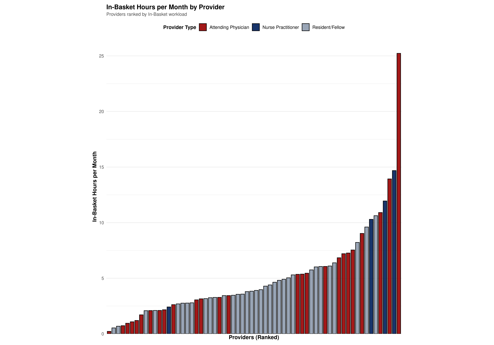
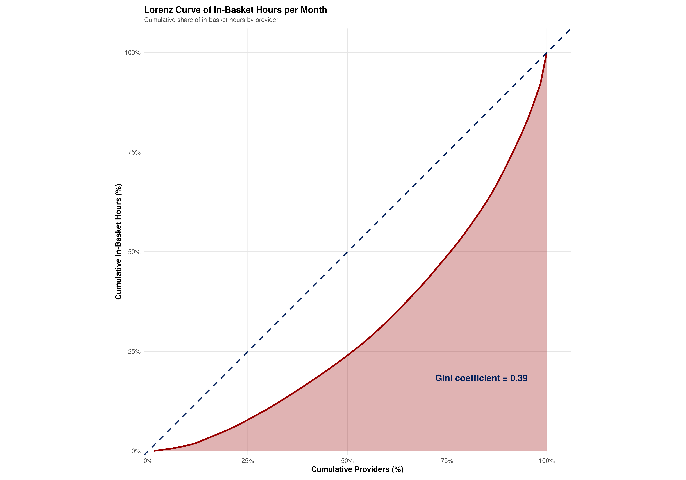
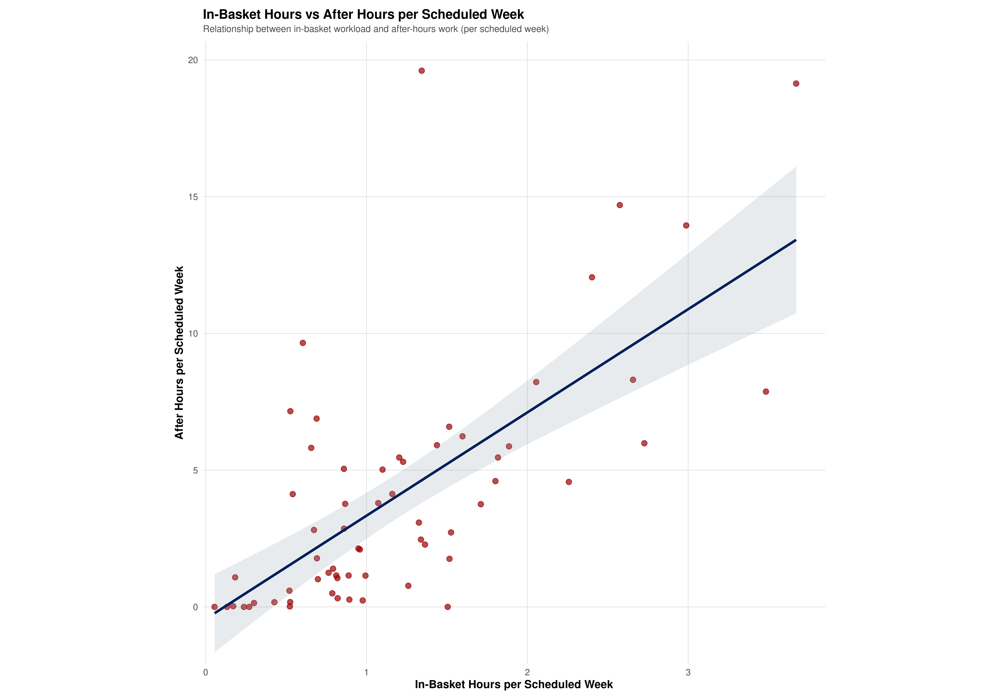

Inboxed Minds: A Human Factors Analysis of In-Basket Messaging in Outpatient Psychiatry
BMIN 5070-001: Human Factors in Biomedical Informatics
Introduction
Outpatient psychiatry work is visible to institutions in only one form: billable appointment slots on the clinic schedule. These are the units through which productivity, compensation, and staffing decisions are defined. Every slot is assumed to contain the full scope of psychiatric care, including evaluation, diagnosis, treatment, documentation, and closure, all within the limits of the scheduled time. In this view, care appears orderly and complete, beginning and ending within the electronic calendar’s grid.
In practice, much of psychiatric work takes place outside those visible appointments. An entire layer of invisible work sustains patient care but receives no dedicated time, credit, or recognition. Psychiatrists spend large parts of their day returning phone calls, clarifying pharmacy requests, completing prior authorizations, navigating insurance barriers, coordinating with therapists and case managers, reviewing outside records and lab results, resolving scheduling conflicts, and responding to patient portal messages that often arrive after hours. These tasks are not secondary to care; they are the glue that holds the clinical system together. Yet they remain absent from official metrics and unsupported by formal workflows.
The accumulation of invisible work steadily erodes the boundaries between clinical and personal time. Lunch breaks vanish, academic work is postponed, and evenings are consumed by message backlogs and unresolved coordination tasks. Each task may seem small, but together they form a parallel workload that is essential to patient safety and continuity yet invisible to the institution. The schedule shows completion, while the clinician’s experience reveals an ongoing and unacknowledged obligation.
This divide exposes a deeper sociotechnical problem. The technical system, which includes the EHR and billing infrastructure, captures only what can be billed. The human system, composed of clinicians, absorbs everything else. What remains invisible to the institution is deeply tangible to the people doing the work. Recognizing this mismatch is the first step toward redesigning systems that account for the full scope of psychiatric care, not just the portion that fits neatly into the visible calendar.
Problem Statement and Significance
The growing burden of “invisible work” imposed by electronic health record (EHR) in-basket messaging has received increasing attention across medical specialties. Managing multiple asynchronous communication streams exceeds the bounds of distributed cognition designed into current workflows. The problem therefore exemplifies misalignment between the technical subsystem (EHR architecture) and the social subsystem (organizational workload expectations). In psychiatry, complex case management and highly individualized care coordination amplify the unseen workload managed via secure EHR messaging, where “message burden” encompasses both task load (quantitative volume) and mental workload (cognitive demands of context-switching and clinical decision-making). This study addresses these knowledge gaps by analyzing Epic Signal data from all outpatient psychiatry clinicians at one large academic medical center, mapping message volume, time spent, and after-hours activity to make invisible work visible and provide an evidence base for targeted interventions.
Literature Review
The growing burden of electronic health record (EHR) in-basket messaging has emerged as a critical challenge across medical specialties, with mounting evidence linking message volume to clinician burnout and work-life imbalance. Recent literature reveals both the scale of this invisible workload and promising approaches to mitigation.
Quantifying the In-Basket Burden
Multiple studies have documented the dramatic growth of patient portal messaging and its impact on clinician workload. North et al. (2020) found that patient portal enrollment nearly doubled (from 33% to 62%) while message volume nearly tripled in some specialties, with physicians performing the majority of responses and substantial portions handled during evenings and weekends. The COVID-19 pandemic further exacerbated this trend, with Nath et al. (2021) reporting that patient medical advice requests more than doubled in primary care (105% increase) and total inbox time increased by 15-17% during the pandemic period.
Holmgren et al. (2022) demonstrated that weekly patient advice messages jumped from 8 to 16 per primary care physician post-COVID, while mean active EHR time increased by 6.5% for primary care physicians. Martinez et al. (2024) found that each additional 10 patient messages per quarter was associated with 12 minutes of extra after-hours EHR time, confirming that message volume directly translates to work-life boundary erosion.
The Documentation and In-Basket Connection
Arndt et al. (2017) provided landmark evidence that physicians spend 5.9 hours of an 11.4-hour workday on EHR tasks, including nearly 1 hour daily on in-basket management and clerical tasks. This “tethered to the EHR” phenomenon means that for every hour of direct clinical time, physicians spend nearly two hours on electronic and administrative labor. Yan et al. (2021) systematically reviewed 30+ studies and found consistent evidence that excessive EHR time, high message volume, and after-hours work are all correlated with provider burnout.
Burnout and Turnover Implications
The human and financial costs of this burden are substantial. Hamidi et al. (2018) found that physicians with burnout were more than twice as likely to plan on leaving their practice, with burnout accounting for 13-17% of physician departures and costing $15-55 million in recruitment costs over two years. Lou et al. (2022) demonstrated that while EHR workload metrics alone cannot reliably predict burnout, the combination of heavy after-hours use and high message volume significantly contributes to emotional exhaustion.
Clinician Perspectives and Coping Strategies
Qualitative studies reveal the psychological toll of constant message management. Lieu et al. (2019) found that primary care physicians often receive 70+ messages daily and feel “unbounded” by patient expectations for rapid responses. Physicians have developed numerous personal coping strategies, including one-touch processing rules and setting response time expectations, but many feel that message management remains a constant, stressful addition not accounted for in productivity metrics.
Murphy et al. (2019) synthesized clinician recommendations into five key areas: reducing low-value notifications, preventing message loss, improving inbox user interface, implementing team delegation, and providing protected time for inbox work. These findings highlight the need for both technological and organizational solutions.
Emerging Technological Solutions
Recent studies have evaluated AI-assisted approaches to in-basket management. Tai-Seale et al. (2024) and Garcia et al. (2024) both found that AI-generated message drafts achieved 20% utilization rates and significantly reduced clinician cognitive load and burnout scores, even when actual time savings were minimal. Small et al. (2024) demonstrated that AI-generated responses were rated as more empathetic and usable than human-authored ones in 69% of cases.
Ambient AI documentation tools have also shown promise. Balloch et al. (2024) found that AI scribes improved documentation quality while reducing consultation times by 26%, and Haberle et al. (2024) reported that Nuance DAX users showed improved work engagement and satisfaction with no negative impact on patient safety.
Workflow Redesign Successes
Organizational interventions have demonstrated measurable impact. Hadeed et al. (2025) implemented “Best Practice Standards” and “Routing Guides” that reduced physician message volume by 16% and carbon copy messages by 65%. Lukela et al. (2025) found that structured “portal practice sessions” (protected inbox time) led to 93% of physicians reporting improved ability to handle urgent messages and 88% reporting decreased after-hours work, despite minimal changes in objective after-hours metrics.
Liu et al. (2024) reported that an AI-assisted triage program resolved 31.9% of messages at the staff level before reaching physicians, demonstrating the potential for team-based approaches to reduce individual provider burden.
Psychiatry-Specific Gaps
While these studies span multiple specialties, the unique cognitive demands of psychiatric care involving complex medication management, crisis intervention, and emotionally nuanced communication remain underexplored. The combination of frequent patient communications, detailed documentation requirements, and the sensitive nature of mental health discussions creates distinct challenges that warrant specialty-specific evaluation and intervention strategies.
Sociotechnical and Human-Centered Design Framework
This study applies the sociotechnical systems framework central to human factors, recognizing that in-basket workload emerges from the dynamic interaction between EHR technology (the “technical” subsystem), organizational practice, provider role expectations, and patient demand (the “social” subsystem). Following Carayon’s (2019) framework, we examine in-basket workload across four interconnected levels: (1) System Level: EHR architecture, triage protocols, and automation tools shape baseline load; (2) Organizational Level: delegation policies, team structure, and time allocation affect message volume; (3) Individual Level: provider role, clinical volume, and work patterns influence burden; (4) Patient Level: population complexity, portal adoption, and message types shape communication frequency.
This multilevel perspective recognizes that interventions addressing in-basket overload must engage the entire work ecosystem. We operationalize in-basket workload as volume metrics (message counts), time metrics (total and after-hours hours), and distributional metrics (Gini coefficient and Lorenz curves). The inequality metrics directly measure work system imbalance, where cognitive demands are unevenly distributed across providers, creating conditions where some individuals exceed their cognitive capacity while others operate below optimal efficiency.
Materials and Methods
Data Sources
We used Epic Signal, a robust audit log and analytics tool embedded within the Epic electronic health record (EHR), to quantify in-basket activity among outpatient psychiatry clinicians at a large academic medical center. Signal extracts standardized metrics related to clinical messaging, system use time, and after-hours patterns. We obtained two datasets from the EHR informatics team: (1) a “Messages” extract summarizing counts of in-basket messages by type and by provider; and (2) a companion “Time” extract detailing provider time spent on in-basket activities, including date-stamped information, for a one-year period (July 2024–June 2025).
Study Population and Outcome Measures
This study was conducted at Penn Behavioral Health Outpatient Psychiatry Clinic (Philadelphia, PA), where providers operate in a unique organizational context without dedicated support staff for message triage, and must cross-cover colleagues’ in-baskets during absences. Our study population included all psychiatric physicians (attendings, residents and fellows) and advanced practice providers with ambulatory schedules during the study period (July 2024–June 2025). All metrics were averaged monthly per provider. Primary outcomes comprised in-basket message volume by type, total and after-hours work hours, intensity metrics (rates per appointment/scheduled hour), and workload inequality measures (Gini coefficient and Lorenz curves). Secondary outcomes included message subcategories and descriptive statistics by provider role.
Data Processing and Analysis
Data were imported from Excel exports using R, merged by provider identifier, and cleaned through standardized ID conversion, message type categorization, and monthly aggregation. Analyses were performed in R (v4.5.1) using descriptive statistics, comparative group analyses (Welch’s t-tests/Wilcoxon rank-sum), and inequality measures (Gini coefficients, Lorenz curves). All data manipulation steps are fully reproducible (see inbasketosis.qmd).
Data Processing Pipeline: Epic Signal Analytics → Excel Export → R Processing → Analysis & Visualization
Results
Descriptive Statistics
The study cohort consisted of 64 providers from the Department of Psychiatry at an academic medical center. Table 1 presents comprehensive descriptive statistics across provider types, workload metrics, message patterns, and temporal characteristics.
Table 1. Summary Statistics for OPC (July 2024 - June 2025)
| Characteristic | n (%) | Range | Mean (SD) | Median (IQR) |
|---|---|---|---|---|
| Provider type | ||||
| Attending physician | 26 (40.6) | — | — | — |
| Nurse practitioner | 4 (6.2) | — | — | — |
| Resident/Fellow | 34 (53.1) | — | — | — |
| All | 64 (100) | — | — | — |
| Scheduled Workload | ||||
| Appointments | 28,424 (—) | 5.0-41.2 | 17.8 (9.2) | 15.6 (8.5) |
| Schedule Hours | 21,480 (—) | 5.0-26.8 | 13.5 (5.9) | 11.9 (7.2) |
| Digital Workload | ||||
| In-Basket Hours | 1,941.2 (12.4) | 0.1-6.3 | 1.3 (1.0) | 1.0 (0.8) |
| After Hours | 6,605.2 (42.1) | 0.0-19.6 | 4.1 (4.4) | 2.8 (4.9) |
| All | 15,674.4 (100) | 0.4-36.9 | 10.8 (7.6) | 8.9 (7.3) |
| Message Counts | ||||
| Medical Advice Request | 13,841 (43.6) | 0.0-45.9 | 8.8 (8.9) | 6.6 (10.4) |
| Patient Call | 6,744 (21.3) | 0.0-19.5 | 4.0 (4.4) | 2.5 (4.8) |
| Result | 5,220 (16.5) | 0.0-27.5 | 3.2 (5.5) | 1.0 (2.8) |
| Rx Authorization | 5,920 (18.7) | 0.0-30.5 | 3.7 (5.8) | 1.6 (2.8) |
| All | 31,725 (100) | 0.0-94.6 | 19.6 (17.9) | 15.1 (19.4) |
| Days To Complete | ||||
| Medical Advice Request | — | 0.0-16.6 | 2.7 (3.7) | 1.3 (2.2) |
| Patient Call | — | 0.0-17.0 | 3.2 (4.2) | 1.5 (3.6) |
| Result | — | 0.0-29.0 | 4.4 (6.0) | 2.5 (5.5) |
| Rx Authorization | — | 0.0-5.4 | 0.4 (0.8) | 0.2 (0.4) |
| All | — | 0.0-11.5 | 2.7 (3.0) | 1.5 (3.0) |
| Minutes per Message | ||||
| Medical Advice Request | — | 1.0-87.0 | 15.2 (16.1) | 8.2 (11.8) |
| Patient Call | — | 3.7-375.0 | 37.4 (52.7) | 23.6 (18.4) |
| Result | — | 2.5-1,992.5 | 164.6 (398.4) | 38.8 (86.2) |
| Rx Authorization | — | 3.1-375.0 | 52.2 (62.8) | 32.2 (51.2) |
| All | — | 1.0-50.0 | 6.6 (8.2) | 4.1 (4.4) |
| Minutes per Appointment | ||||
| In-Basket | 183.0 (14.1) | 0.0-9.6 | 2.9 (2.4) | 2.9 (3.6) |
| Clinical Review | 189.2 (14.5) | 0.0-22.5 | 3.0 (3.4) | 2.5 (3.9) |
| Notes/Letters | 806.7 (62.0) | 0.0-98.0 | 12.6 (15.0) | 10.2 (16.3) |
| Orders | 121.7 (9.4) | 0.0-8.2 | 1.9 (1.7) | 1.8 (2.7) |
| All | 1,300.7 (100) | 0.0-129.7 | 20.3 (20.9) | 18.5 (26.4) |
Table 1. Characteristics of 64 Providers in the Department of Psychiatry (July 2024 - June 2025). Data from Epic Signal Analytics. SD = Standard Deviation; IQR = Interquartile Range. All metrics normalized per scheduled hour.
Provider Distribution
The cohort included 26 attending physicians (40.6%), 4 nurse practitioners (6.2%), and 34 trainees (53.1%) including residents and fellows, representing the full spectrum of outpatient psychiatry providers at the institution.
Figure 1: In-Basket Hours by Provider

Figure 1. Distribution of in-basket hours per month across all providers, ranked from lowest to highest workload. The visualization reveals that while most providers have manageable monthly in-basket hours (under 10 hours), a smaller subset, predominantly attending physicians, bears a disproportionate burden with some exceeding 25 hours per month. This pattern highlights significant in-basket workload inequity within the clinic, demonstrating work system imbalance where cognitive demands exceed individual provider capacity for a subset of clinicians.
Workload and After-Hours Patterns
Providers spent an average of 1.3 hours per month on in-basket messaging activities (range: 0.1–6.3 hours), representing 12.4% of total digital workload. Critically, after-hours system usage constituted 42.1% of total digital workload, with providers averaging 4.1 hours per month outside standard clinical hours. This substantial spillover into personal time represents a major boundary erosion between work and life domains. Collectively, the 1,941 annual hours spent on in-basket messaging across all providers represents 1.2 full-time employees, $266,817 in professional revenue, or approximately 3,882 patient appointments.
Providers received an average of 19.6 messages per observation period (SD = 17.9), with medical advice requests representing the largest category (43.6% of total messages). Mean response times varied by message type: Medical Advice (2.7 days), Patient Calls (3.2 days), Results (4.4 days), and Rx Authorization (0.4 days). This pattern reveals that messaging work routinely extends beyond business hours, creating “pajama time” where providers manage in-basket communications during evenings and weekends.
Figure 2: Inequality in Workload Distribution

Figure 2. Lorenz curve quantifying the inequality in workload distribution. The Gini coefficient of 0.39 indicates moderate inequality, meaning that in-basket hours are not evenly distributed across providers. Approximately 50% of providers handle only 20-25% of total in-basket hours, while the top 25% of providers manage about 50% of the workload. This concentration of work has important implications for burnout risk and resource allocation, reflecting distributed cognition challenges where work system balance is disrupted by uneven cognitive load distribution.
Workload Distribution and Inequality
Workload distribution demonstrated significant variation, with total system time ranging from 0.4 to 36.9 hours annually per provider. Gini coefficient analysis revealed moderate inequality in workload distribution, with attending physicians bearing a disproportionate share of messaging burden compared to trainees.
Figure 3: Relationship Between In-Basket and After-Hours Work

Figure 3. Scatter plot demonstrating a positive correlation between in-basket and after-hours work. Providers with higher in-basket hours per scheduled week tend to also work more after-hours, suggesting that in-basket burden is not fully contained within standard clinical time. Several outliers exist, including providers with very high after-hours work (>18 hours) despite moderate in-basket loads, indicating that after-hours patterns are complex and may reflect both workload demands and individual work styles.
Key Findings
The analysis revealed that, collectively, providers spent an astonishing 1,941 hours over the course of a year managing in-basket messages, a workload equivalent to employing 1.2 full-time clinicians (based on 54 working weeks per year, 40 hours per week, and 0.9 clinical effort). Framed differently, this messaging labor represented $266,817 in professional revenue (at a rate of $137 per hour), or the time needed to conduct nearly 3,882 30-minute patient appointments. The distribution of this messaging burden was far from equal. The Gini coefficient of 0.39 reflects a moderate concentration of workload, where a smaller subset of providers shouldered much of the overall in-basket responsibility. Notably, this messaging workload often bled into after-hours periods, with 42% of total EHR activity taking place outside of standard clinical hours. This significant spillover highlights a pervasive erosion of the boundary between work and personal life for many clinicians.
Discussion
Implementation and Optimization Challenges
Current productivity metrics focus exclusively on scheduled face-to-face encounters, creating a disconnect between actual work performed and work that “counts” for compensation. Recently implemented policies plan to use message completion timeliness in salary calculations, creating perverse incentives where providers are financially penalized for taking appropriate clinical time. Epic Signal metrics represent only the tip of the iceberg, as they exclude telephone calls, paperwork, prior authorizations, and mental processing time, meaning actual invisible work burden is substantially higher than quantifiable through EHR audit logs alone.
Human Factors Interpretation
The observed patterns reveal fundamental work system imbalances that extend beyond simple workload management. The uneven distribution of messaging burden (Gini = 0.39) represents a classic work system imbalance where some providers exceed their cognitive capacity while others operate below optimal efficiency. This inequality creates conditions where the most experienced clinicians, who often handle the most complex cases, also bear disproportionate administrative burden, leading to cognitive overload and potential burnout.
The constant task-switching between patient care and messaging exemplifies the exponential cost increases predicted by mental workload theory (Wickens, 2008). Each context switch requires cognitive resources that could otherwise be devoted to clinical reasoning, creating a compounding effect where message management fragments attention throughout the day. The 42% after-hours work spillover further compounds this problem through the lens of attention restoration theory (Kaplan, 1995), where constant digital interruptions prevent the cognitive recovery necessary for sustained clinical performance.
Cross-coverage burden spikes represent a distributed cognition breakdown, where individual workload becomes unpredictable during colleague absences, disrupting the carefully calibrated work system balance. Finally, the speed versus quality pressure creates perverse incentives where financial penalties discourage the thorough clinical consideration that quality care requires.
The positive correlation between in-basket hours and after-hours work suggests that messaging burden spills beyond scheduled clinical time, creating persistent cognitive load that follows providers home and fragments attention, disrupting clinical reasoning throughout the day.
Problem-Solution Mapping
These human factors challenges demand targeted interventions grounded in sociotechnical design principles. For uneven workload distribution, real-time workload monitoring with automatic redistribution can restore work system balance by ensuring cognitive demands remain within individual capacity limits. Task-switching costs can be reduced by embedding messaging within patient context, allowing providers to maintain clinical focus while managing communications.
After-hours work spillover requires boundary management interventions, including protected in-basket time and response time limits that respect cognitive recovery needs. Message prioritization difficulty, reflecting information density overload, can be addressed through AI-powered urgency classification and visual cues that help providers quickly identify critical communications. Cross-coverage burden spikes demand distributed cognition solutions, such as shared team in-baskets with role-based access that maintain system continuity during absences.
Finally, the speed versus quality pressure requires fundamental incentive restructuring, replacing timeliness metrics with quality-weighted measures that reward thorough clinical consideration rather than penalize it.
Design and Policy Recommendations
Following the course’s emphasis on implementation and optimization, we propose solutions grounded in sociotechnical design principles. Current Epic in-basket interfaces exemplify poor integration with clinical workflows, lack of intelligent prioritization, and inadequate search capabilities. The system needs intelligent prioritization for urgent vs. routine messages, better search capabilities, and improved mobile design for after-hours access. Routine message types (Rx authorizations, results) are suitable for automated responses with provider override capabilities. AI-powered triage systems could reduce cognitive load but must be transparent and subject to clinician oversight.
Organizational changes require team-based approaches to in-basket management, including dedicated message management staff, shared responsibility models, and structured time allocation. Systems to monitor individual provider message loads could prevent extreme workload inequity while balancing safety monitoring with individual autonomy. Current productivity metrics that fail to account for invisible work burden must be reformed to capture the full scope of clinical work.
Multi-Level Intervention Framework: - Technical Subsystem: AI-powered message triage, integrated messaging within patient context, automated response templates, real-time workload monitoring dashboards - Organizational Subsystem: Protected in-basket management time, team-based message routing, cross-coverage protocols with workload limits, quality-weighted metrics over timeliness
- Individual/Patient Subsystem: Provider training on efficient in-basket management, patient education on appropriate message use, boundary management strategies, workload redistribution based on capacity
This multi-level approach ensures that human factors principles guide sociotechnical system redesign rather than placing adaptation burden solely on individual providers.
Ethical, Policy, and Cybersecurity Considerations
Compensation Equity: Providers who bear disproportionate messaging burden may not be adequately compensated for this work. Current productivity metrics focus primarily on face-to-face patient encounters, effectively rendering hundreds of hours of in-basket work invisible to compensation systems. A provider spending 40 hours monthly on in-basket management, equivalent to one full week of clinical work, may receive no direct recognition of this labor in compensation calculations.
Professional Autonomy: The positive correlation between in-basket and after-hours work suggests that messaging burden extends beyond standard work hours, potentially compromising work-life boundaries and provider autonomy. Following Emanuel & Wachter’s (2019) analysis of digital surveillance in healthcare, loss of professional control over work boundaries increases cognitive load and burnout risk, creating a vicious cycle where autonomy loss compounds workload stress.
Data Surveillance and Privacy Risk: The use of Epic Signal Analytics to monitor provider behavior raises questions about privacy, surveillance, and appropriate boundaries of organizational oversight. Following Walker and Koppel’s (2016) analysis, the fragmentation of healthcare cybersecurity creates vulnerabilities, where the proliferation of messaging systems and after-hours access patterns may create security risks not adequately addressed by current frameworks.
Limitations and Future Research
This analysis has several limitations: the study is limited to a single department (psychiatry) at one institution, which may limit generalizability to other specialties and healthcare settings; the analysis relies on Epic Signal Analytics data, which may not capture all aspects of provider workload; the 12-month observation period may not capture seasonal variations or long-term trends; and the analysis focuses on quantitative metrics but does not capture qualitative aspects of message complexity, clinical urgency, or provider satisfaction. A critical next step involves qualitative interviews with high-burden providers to triangulate quantitative findings with lived experiences of cognitive load, task switching challenges, and work-life boundary management. Future research should include longitudinal studies examining seasonal variations and policy changes, multi-site studies across different specialties and organizational structures, and intervention studies testing AI-powered triage systems and workflow optimization strategies with rigorous evaluation of both quantitative outcomes and qualitative provider experience measures.
Conclusion
This analysis of in-basket messaging workload in outpatient psychiatry reveals both the scale of the challenge and opportunities for improvement. The moderate inequality in workload distribution (Gini = 0.39) and strong correlation between in-basket hours and after-hours work highlight the need for targeted interventions grounded in human factors principles. Addressing in-basket messaging burden requires a comprehensive approach including technological solutions, organizational changes, and policy reforms, with a focus on workflow optimization rather than crisis management. By making this invisible work visible, we provide an evidence base for targeted interventions and contribute to more sustainable digital work environments in healthcare. Reducing in-basket burden is not about doing digital work faster, but designing systems that honor human cognitive limits.
References
Apathy, N. C., Hicks, K., Bocknek, L., Arndt, B. G., Rule, A., & Sinsky, C. A. (2024). Inbox message prioritization and management approaches in primary care. JAMIA Open, 7(4), ooae135. https://doi.org/10.1093/jamiaopen/ooae135
Apathy, N. C., Rule, A., McAlearney, A. S., Arndt, B. G., & Sinsky, C. A. (2025). Clinician perspectives on delegation and shared work in the EHR inbox: Qualitative study. Journal of General Internal Medicine, 40(9), 2198–2207. https://doi.org/10.1007/s11606-025-09478-7
Carayon, P. (2019). Human Factors in Health(care) Informatics: Toward Continuous Sociotechnical System Design. Studies in Health Technology and Informatics, 265, 22-27.
Cresswell, K. M., Bates, D. W., & Sheikh, A. (2017). Ten key considerations for the successful optimization of large-scale health information technology. Journal of the American Medical Informatics Association, 24(1), 182-187.
Emanuel, E. J., & Wachter, R. M. (2019). Artificial intelligence in health care: Will the value match the hype? JAMA, 321(23), 2281-2282.
Holmgren, A. J., Lin, S. C., Downing, N. L., et al. (2025). Trends in physician electronic health record time and message volume. JAMA Internal Medicine, 185(4), 461–463. https://doi.org/10.1001/jamainternmed.2024.8138
Kaplan, S. (1995). The restorative benefits of nature: Toward an integrative framework. Journal of Environmental Psychology, 15(3), 169-182.
Karsh, B. T., Weinger, M. B., Abbott, P. A., & Wears, R. L. (2010). Health information technology: fallacies and sober realities. Journal of the American Medical Informatics Association, 17(6), 617-623.
Koppel, R., & Lehmann, C. U. (2015). Implications of an emerging EHR monoculture for hospitals and healthcare systems. Journal of the American Medical Informatics Association, 22(2), 465-71.
Koppel, R., Metlay, J. P., et al. (2005). Role of computerized physician order entry systems in facilitating medication errors. JAMA, 293(10), 1197-203.
Koppel, R. (2016). Great Promises of Healthcare Information Technology Deliver Less. Chapter 6 in Healthcare Information Management Systems (eds Weaver CA, Ball MJ, Kim GR, Kiel JM). Springer International Publishing.
Kuziemsky, C. E., Schwartz, D. G., Airan-Javia, S., & Koppel, R. (2019). Context and Meaning in EHR Displays. Studies in Health Technology and Informatics, 265, 69-73.
Lukela, J. R., Henderson, J., Fan, A., Chapman, J. C., Fontenot, A., et al. (2025). Surprisingly helpful: The introduction of portal practice slots to address the in-basket explosion. Journal of General Internal Medicine, 40(10), 2445–2449. https://doi.org/10.1007/s11606-025-09582-8
McGreevey, J. D., Hanson, C. W., & Koppel, R. (2020). Chatbots: Clinical, Legal, and Ethical Aspects of Artificial Intelligence–Assisted Conversational Agents in Health Care. JAMA, 324(6), 552-553.
Small, W. R., Wiesenfeld, B., Brandfield-Harvey, B., et al. (2024). Large language model–based responses to patients’ in-basket messages. JAMA Network Open, 7(7), e2422399. https://doi.org/10.1001/jamanetworkopen.2024.22399
Smith, S. W., & Koppel, R. (2014). Healthcare information technology’s relativity problems: a typology of how patients’ physical reality, clinicians’ mental models, and healthcare information technology differ. Journal of the American Medical Informatics Association, 21(1), 117-31.
Thimbleby, H. (2022). Fix IT: See and solve the problems of digital healthcare. Oxford University Press.
Walker, J., & Koppel, R. (2016). For Healthcare Cybersecurity the Whole is Weaker Than the Sum of the Parts. The Health Care Blog. https://thehealthcareblog.com/blog/2016/09/23/for-healthcare-cybersecurity-the-whole-is-weaker-than-the-sum-of-the-parts/
Wickens, C. D. (2008). Multiple resources and mental workload. Human Factors, 50(3), 449-455.
Worsham, C. M., Barron, H. T., Ratwani, R. M., et al. (2024). Clinician message workload and burnout in outpatient care: A multi-site mixed methods study. BMC Health Services Research, 24(1), 11686. https://doi.org/10.1186/s12913-024-11686-6